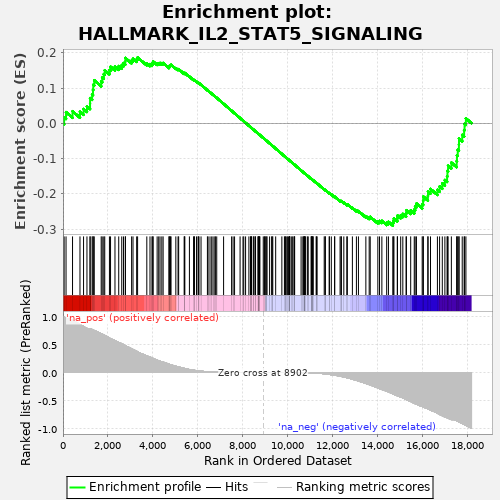

| | | Dataset | deseq_res_for_gsea |
| Phenotype | NoPhenotypeAvailable |
| Upregulated in class | na_neg |
| GeneSet | HALLMARK_IL2_STAT5_SIGNALING |
| Enrichment Score (ES) | -0.29015514 |
| Normalized Enrichment Score (NES) | -1.030809 |
| Nominal p-value | 0.35526314 |
| FDR q-value | 1.0 |
| FWER p-Value | 1.0 |
Table: GSEA Results Summary

Fig 1: Enrichment plot: HALLMARK_IL2_STAT5_SIGNALING
Profile of the Running ES Score & Positions of GeneSet Members on the Rank Ordered List
| PROBE | GENE SYMBOL | GENE_TITLE | RANK IN GENE LIST | RANK METRIC SCORE | RUNNING ES | CORE ENRICHMENT | | 1 | TNFRSF4 | | | 50 | 0.987 | 0.0169 | No |
| 2 | CD81 | | | 135 | 0.970 | 0.0316 | No |
| 3 | SHE | | | 424 | 0.932 | 0.0341 | No |
| 4 | BMPR2 | | | 755 | 0.857 | 0.0329 | No |
| 5 | IRF4 | | | 914 | 0.821 | 0.0404 | No |
| 6 | ST3GAL4 | | | 1065 | 0.789 | 0.0478 | No |
| 7 | SERPINC1 | | | 1203 | 0.783 | 0.0558 | No |
| 8 | AHR | | | 1205 | 0.783 | 0.0714 | No |
| 9 | TNFSF11 | | | 1295 | 0.769 | 0.0818 | No |
| 10 | TLR7 | | | 1334 | 0.761 | 0.0948 | No |
| 11 | DCPS | | | 1346 | 0.758 | 0.1093 | No |
| 12 | CDCP1 | | | 1390 | 0.750 | 0.1219 | No |
| 13 | CTLA4 | | | 1698 | 0.695 | 0.1187 | No |
| 14 | GPR65 | | | 1743 | 0.685 | 0.1299 | No |
| 15 | CD86 | | | 1813 | 0.671 | 0.1394 | No |
| 16 | SNX14 | | | 1856 | 0.664 | 0.1503 | No |
| 17 | BCL2 | | | 2065 | 0.615 | 0.1510 | No |
| 18 | PENK | | | 2114 | 0.604 | 0.1604 | No |
| 19 | CCND2 | | | 2311 | 0.567 | 0.1608 | No |
| 20 | CDC6 | | | 2478 | 0.534 | 0.1622 | No |
| 21 | ETFBKMT | | | 2612 | 0.516 | 0.1651 | No |
| 22 | FGL2 | | | 2689 | 0.498 | 0.1708 | No |
| 23 | IL13 | | | 2772 | 0.480 | 0.1758 | No |
| 24 | SWAP70 | | | 2774 | 0.478 | 0.1853 | No |
| 25 | EEF1AKMT1 | | | 3051 | 0.422 | 0.1783 | No |
| 26 | IL2RA | | | 3113 | 0.411 | 0.1831 | No |
| 27 | CDC42SE2 | | | 3275 | 0.381 | 0.1818 | No |
| 28 | NOP2 | | | 3317 | 0.368 | 0.1868 | No |
| 29 | PRKCH | | | 3727 | 0.296 | 0.1700 | No |
| 30 | FAM126B | | | 3868 | 0.276 | 0.1677 | No |
| 31 | TNFRSF1B | | | 3956 | 0.260 | 0.1680 | No |
| 32 | GALM | | | 3988 | 0.255 | 0.1714 | No |
| 33 | PRAF2 | | | 4009 | 0.251 | 0.1753 | No |
| 34 | DENND5A | | | 4186 | 0.221 | 0.1699 | No |
| 35 | HOPX | | | 4256 | 0.210 | 0.1702 | No |
| 36 | PUS1 | | | 4315 | 0.202 | 0.1710 | No |
| 37 | PHTF2 | | | 4395 | 0.191 | 0.1704 | No |
| 38 | CST7 | | | 4452 | 0.185 | 0.1710 | No |
| 39 | SNX9 | | | 4713 | 0.149 | 0.1595 | No |
| 40 | EMP1 | | | 4721 | 0.148 | 0.1620 | No |
| 41 | IL10RA | | | 4745 | 0.144 | 0.1636 | No |
| 42 | IL1RL1 | | | 4778 | 0.140 | 0.1646 | No |
| 43 | MYO1C | | | 4804 | 0.137 | 0.1660 | No |
| 44 | LRRC8C | | | 5017 | 0.110 | 0.1564 | No |
| 45 | MAPKAPK2 | | | 5116 | 0.101 | 0.1529 | No |
| 46 | SOCS1 | | | 5143 | 0.098 | 0.1534 | No |
| 47 | NDRG1 | | | 5387 | 0.073 | 0.1414 | No |
| 48 | RGS16 | | | 5408 | 0.072 | 0.1417 | No |
| 49 | CSF2 | | | 5414 | 0.071 | 0.1428 | No |
| 50 | HK2 | | | 5621 | 0.052 | 0.1324 | No |
| 51 | PNP | | | 5807 | 0.040 | 0.1229 | No |
| 52 | FURIN | | | 5829 | 0.039 | 0.1225 | No |
| 53 | FAH | | | 5845 | 0.038 | 0.1225 | No |
| 54 | AHNAK | | | 5935 | 0.033 | 0.1182 | No |
| 55 | NCS1 | | | 6008 | 0.029 | 0.1148 | No |
| 56 | CD44 | | | 6019 | 0.029 | 0.1148 | No |
| 57 | UMPS | | | 6047 | 0.028 | 0.1138 | No |
| 58 | MYO1E | | | 6138 | 0.024 | 0.1093 | No |
| 59 | GPR83 | | | 6421 | 0.013 | 0.0939 | No |
| 60 | CCND3 | | | 6451 | 0.011 | 0.0925 | No |
| 61 | UCK2 | | | 6537 | 0.009 | 0.0879 | No |
| 62 | RABGAP1L | | | 6613 | 0.007 | 0.0839 | No |
| 63 | SPRED2 | | | 6673 | 0.006 | 0.0807 | No |
| 64 | RRAGD | | | 6753 | 0.005 | 0.0764 | No |
| 65 | AMACR | | | 6775 | 0.005 | 0.0754 | No |
| 66 | GSTO1 | | | 6836 | 0.004 | 0.0721 | No |
| 67 | RORA | | | 7141 | 0.002 | 0.0552 | No |
| 68 | CYFIP1 | | | 7497 | 0.000 | 0.0355 | No |
| 69 | CISH | | | 7563 | 0.000 | 0.0319 | No |
| 70 | NCOA3 | | | 7629 | 0.000 | 0.0283 | No |
| 71 | CCNE1 | | | 7874 | 0.000 | 0.0147 | No |
| 72 | LTB | | | 8004 | 0.000 | 0.0075 | No |
| 73 | ETV4 | | | 8039 | 0.000 | 0.0056 | No |
| 74 | PTGER2 | | | 8119 | 0.000 | 0.0012 | No |
| 75 | TNFRSF21 | | | 8266 | 0.000 | -0.0069 | No |
| 76 | NRP1 | | | 8341 | 0.000 | -0.0110 | No |
| 77 | MAFF | | | 8346 | 0.000 | -0.0113 | No |
| 78 | SPRY4 | | | 8382 | 0.000 | -0.0132 | No |
| 79 | SLC2A3 | | | 8392 | 0.000 | -0.0137 | No |
| 80 | PDCD2L | | | 8480 | 0.000 | -0.0185 | No |
| 81 | KLF6 | | | 8484 | 0.000 | -0.0187 | No |
| 82 | GUCY1B1 | | | 8545 | 0.000 | -0.0220 | No |
| 83 | GADD45B | | | 8561 | 0.000 | -0.0229 | No |
| 84 | LIF | | | 8671 | 0.000 | -0.0289 | No |
| 85 | ITIH5 | | | 8681 | 0.000 | -0.0294 | No |
| 86 | CA2 | | | 8706 | 0.000 | -0.0308 | No |
| 87 | APLP1 | | | 8707 | 0.000 | -0.0308 | No |
| 88 | BATF3 | | | 8714 | 0.000 | -0.0311 | No |
| 89 | DHRS3 | | | 8738 | 0.000 | -0.0324 | No |
| 90 | PHLDA1 | | | 8755 | 0.000 | -0.0333 | No |
| 91 | TGM2 | | | 8905 | 0.000 | -0.0416 | No |
| 92 | TRAF1 | | | 8956 | -0.000 | -0.0444 | No |
| 93 | LRIG1 | | | 8988 | -0.000 | -0.0461 | No |
| 94 | SPP1 | | | 8989 | -0.000 | -0.0461 | No |
| 95 | TNFRSF9 | | | 9060 | -0.000 | -0.0500 | No |
| 96 | COL6A1 | | | 9068 | -0.000 | -0.0504 | No |
| 97 | SYT11 | | | 9187 | -0.000 | -0.0569 | No |
| 98 | CD83 | | | 9278 | -0.000 | -0.0619 | No |
| 99 | TNFRSF8 | | | 9301 | -0.000 | -0.0632 | No |
| 100 | F2RL2 | | | 9328 | -0.000 | -0.0646 | No |
| 101 | IL4R | | | 9457 | -0.000 | -0.0717 | No |
| 102 | ITGAV | | | 9732 | -0.000 | -0.0870 | No |
| 103 | BMP2 | | | 9846 | -0.000 | -0.0933 | No |
| 104 | PLPP1 | | | 9880 | -0.000 | -0.0951 | No |
| 105 | PLIN2 | | | 9888 | -0.000 | -0.0955 | No |
| 106 | P2RX4 | | | 9950 | -0.000 | -0.0989 | No |
| 107 | S100A1 | | | 9990 | -0.000 | -0.1011 | No |
| 108 | GBP4 | | | 10024 | -0.000 | -0.1029 | No |
| 109 | SLC1A5 | | | 10072 | -0.000 | -0.1055 | No |
| 110 | TTC39B | | | 10080 | -0.000 | -0.1059 | No |
| 111 | IKZF2 | | | 10081 | -0.000 | -0.1059 | No |
| 112 | MYC | | | 10082 | -0.000 | -0.1059 | No |
| 113 | ODC1 | | | 10169 | -0.000 | -0.1107 | No |
| 114 | WLS | | | 10214 | -0.000 | -0.1131 | No |
| 115 | SMPDL3A | | | 10272 | -0.000 | -0.1163 | No |
| 116 | IL2RB | | | 10291 | -0.000 | -0.1173 | No |
| 117 | GABARAPL1 | | | 10301 | -0.000 | -0.1178 | No |
| 118 | PTCH1 | | | 10587 | -0.001 | -0.1336 | No |
| 119 | SELL | | | 10669 | -0.001 | -0.1381 | No |
| 120 | IL18R1 | | | 10688 | -0.001 | -0.1391 | No |
| 121 | CKAP4 | | | 10720 | -0.001 | -0.1408 | No |
| 122 | SLC39A8 | | | 10733 | -0.002 | -0.1414 | No |
| 123 | CAPG | | | 10747 | -0.002 | -0.1421 | No |
| 124 | IGF2R | | | 10758 | -0.002 | -0.1426 | No |
| 125 | ABCB1 | | | 10788 | -0.002 | -0.1442 | No |
| 126 | ALCAM | | | 10867 | -0.003 | -0.1485 | No |
| 127 | IRF8 | | | 10904 | -0.003 | -0.1504 | No |
| 128 | FLT3LG | | | 11033 | -0.005 | -0.1575 | No |
| 129 | ENPP1 | | | 11046 | -0.005 | -0.1580 | No |
| 130 | CCR4 | | | 11054 | -0.005 | -0.1583 | No |
| 131 | CDKN1C | | | 11079 | -0.006 | -0.1595 | No |
| 132 | ITGAE | | | 11095 | -0.006 | -0.1603 | No |
| 133 | AHCY | | | 11112 | -0.006 | -0.1610 | No |
| 134 | SH3BGRL2 | | | 11124 | -0.006 | -0.1615 | No |
| 135 | IKZF4 | | | 11257 | -0.009 | -0.1687 | No |
| 136 | MXD1 | | | 11271 | -0.010 | -0.1692 | No |
| 137 | ECM1 | | | 11300 | -0.010 | -0.1706 | No |
| 138 | NFKBIZ | | | 11615 | -0.022 | -0.1876 | No |
| 139 | DRC1 | | | 11659 | -0.024 | -0.1895 | No |
| 140 | AGER | | | 11664 | -0.024 | -0.1892 | No |
| 141 | ITGA6 | | | 11838 | -0.033 | -0.1982 | No |
| 142 | NFIL3 | | | 11845 | -0.034 | -0.1979 | No |
| 143 | GLIPR2 | | | 11931 | -0.039 | -0.2018 | No |
| 144 | IL3RA | | | 12078 | -0.047 | -0.2090 | No |
| 145 | ENO3 | | | 12081 | -0.048 | -0.2082 | No |
| 146 | IL1R2 | | | 12321 | -0.065 | -0.2202 | No |
| 147 | CSF1 | | | 12365 | -0.068 | -0.2212 | No |
| 148 | HIPK2 | | | 12379 | -0.070 | -0.2205 | No |
| 149 | P4HA1 | | | 12487 | -0.080 | -0.2249 | No |
| 150 | IRF6 | | | 12621 | -0.092 | -0.2305 | No |
| 151 | CASP3 | | | 12643 | -0.094 | -0.2297 | No |
| 152 | RHOB | | | 12868 | -0.119 | -0.2398 | No |
| 153 | PIM1 | | | 13047 | -0.139 | -0.2470 | No |
| 154 | GPX4 | | | 13137 | -0.151 | -0.2489 | No |
| 155 | PRNP | | | 13467 | -0.194 | -0.2633 | No |
| 156 | TIAM1 | | | 13615 | -0.216 | -0.2672 | No |
| 157 | CXCL10 | | | 13661 | -0.223 | -0.2653 | No |
| 158 | IFITM3 | | | 14000 | -0.274 | -0.2786 | No |
| 159 | RNH1 | | | 14075 | -0.287 | -0.2770 | No |
| 160 | ARL4A | | | 14179 | -0.304 | -0.2767 | No |
| 161 | ANXA4 | | | 14393 | -0.333 | -0.2819 | No |
| 162 | CD48 | | | 14471 | -0.345 | -0.2793 | No |
| 163 | PTRH2 | | | 14667 | -0.381 | -0.2826 | Yes |
| 164 | BCL2L1 | | | 14689 | -0.386 | -0.2760 | Yes |
| 165 | PLSCR1 | | | 14716 | -0.390 | -0.2697 | Yes |
| 166 | PLAGL1 | | | 14865 | -0.415 | -0.2697 | Yes |
| 167 | IFNGR1 | | | 14873 | -0.416 | -0.2618 | Yes |
| 168 | PTH1R | | | 15016 | -0.438 | -0.2609 | Yes |
| 169 | CD79B | | | 15111 | -0.454 | -0.2571 | Yes |
| 170 | ICOS | | | 15256 | -0.480 | -0.2555 | Yes |
| 171 | BHLHE40 | | | 15271 | -0.484 | -0.2467 | Yes |
| 172 | NT5E | | | 15461 | -0.518 | -0.2469 | Yes |
| 173 | TNFSF10 | | | 15619 | -0.550 | -0.2446 | Yes |
| 174 | ADAM19 | | | 15659 | -0.557 | -0.2357 | Yes |
| 175 | MAP6 | | | 15717 | -0.567 | -0.2276 | Yes |
| 176 | TNFRSF18 | | | 15972 | -0.607 | -0.2296 | Yes |
| 177 | SOCS2 | | | 16015 | -0.613 | -0.2197 | Yes |
| 178 | SCN9A | | | 16021 | -0.614 | -0.2077 | Yes |
| 179 | IGF1R | | | 16225 | -0.647 | -0.2061 | Yes |
| 180 | TWSG1 | | | 16231 | -0.648 | -0.1935 | Yes |
| 181 | SLC29A2 | | | 16342 | -0.671 | -0.1862 | Yes |
| 182 | MAP3K8 | | | 16649 | -0.727 | -0.1888 | Yes |
| 183 | BATF | | | 16746 | -0.748 | -0.1792 | Yes |
| 184 | SERPINB6 | | | 16866 | -0.773 | -0.1704 | Yes |
| 185 | XBP1 | | | 16981 | -0.792 | -0.1609 | Yes |
| 186 | CTSZ | | | 17080 | -0.807 | -0.1503 | Yes |
| 187 | PLEC | | | 17095 | -0.810 | -0.1349 | Yes |
| 188 | LCLAT1 | | | 17124 | -0.815 | -0.1202 | Yes |
| 189 | IL10 | | | 17269 | -0.841 | -0.1114 | Yes |
| 190 | GATA1 | | | 17505 | -0.861 | -0.1074 | Yes |
| 191 | SELP | | | 17518 | -0.863 | -0.0908 | Yes |
| 192 | MUC1 | | | 17553 | -0.870 | -0.0754 | Yes |
| 193 | COCH | | | 17605 | -0.882 | -0.0606 | Yes |
| 194 | SYNGR2 | | | 17609 | -0.883 | -0.0432 | Yes |
| 195 | POU2F1 | | | 17752 | -0.911 | -0.0329 | Yes |
| 196 | CAPN3 | | | 17837 | -0.927 | -0.0191 | Yes |
| 197 | HUWE1 | | | 17857 | -0.930 | -0.0016 | Yes |
| 198 | RHOH | | | 17916 | -0.946 | 0.0140 | Yes |
Table: GSEA details [plain text format]
Fig 2: HALLMARK_IL2_STAT5_SIGNALING: Random ES distribution
Gene set null distribution of ES for HALLMARK_IL2_STAT5_SIGNALING